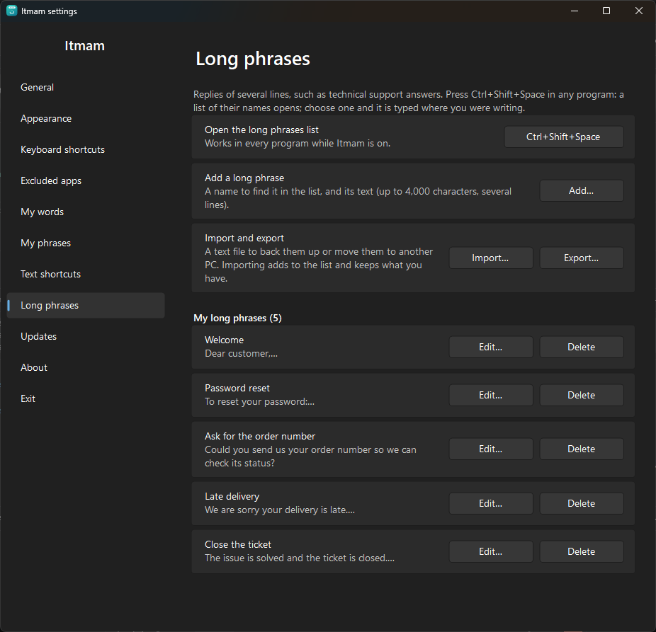
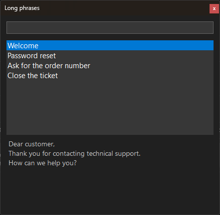

Type the start of a word. Itmam finishes it.
Arabic suggestions above the caret in any app, from a dictionary of about 880,000 words, learning your own words as you go.
Free and open source · Windows 10 (2004) and Windows 11 · x64 and ARM64
Made for writing Arabic
Not a spell checker and not an on-screen keyboard: a small bar above the caret while you type on your own keyboard, like on a phone.
In every app
Notepad, Word, browsers and most apps, with no setup.
Understands hamza and clitics
«احمد» finds «أحمد», «ان» suggests «أن», «إن» and «أنا», with «ال» and attached prepositions.
Learns your words
A word you use twice becomes a suggestion; the ones you use most come first.
Continues mid-word
Go back into a word with a click or Backspace and it continues from the caret.
Looks like Windows 11
A bar that follows light or dark mode, in the colors, size and opacity you choose.
Silent where it should be
Nothing in password fields, apps you exclude, or full-screen games.
Completes phrases
About 250 common phrases such as «بسم الله الرحمن الرحيم» whole with Tab, and it learns the phrases you repeat.
Text shortcuts
Type «ع1» and it offers «السلام عليكم ورحمة الله وبركاته», with your own shortcuts.
Long phrases
Replies of several lines, such as support answers, chosen by name from a list a shortcut opens in any app. Details
Fixes common mistakes
«لاكن» → «لكن», «انشاءالله» → «إن شاء الله», «مدرسه» → «مدرسة»; nothing is replaced unless you ask.
One-key undo
Inserted a word you did not mean? Backspace right away puts back what you typed.
You decide from the bar
Right-click a suggestion: delete it, block the word, or add the phrase to your phrases.
Wikipedia dictionary
A larger dictionary: the whole basic one plus the vocabulary of Arabic Wikipedia, for formal writing and terms; chosen in Settings.
Full backup
Your words, phrases, shortcuts and settings in one file, to move to a new PC.
Your statistics
How many words Itmam completed and how many characters it typed for you. Numbers only, nothing you type.
Long phrases: ready replies for support teams
Whoever answers customers types the same replies dozens of times a day: the greeting, asking for the order number, the password reset steps, closing the ticket. Save each reply once under a name, then insert it with one shortcut in any app you type in, with all its lines.
-

1Write the reply once
Settings → "Long phrases" → "Add": a short name you know it by, and the reply over several lines, up to 4,000 characters. Edit or delete it any time.
-

2Press the shortcut where you type
In email, WhatsApp Web, a ticketing system or any other app, press Ctrl + Shift + Space: a list of your replies opens. Type part of a name or of the text to filter it, and preview the reply before inserting it.
-
Hello, I have a problem with my orderDear customer,
Thank you for contacting technical support.
How can we help you?3Press Enter
The reply is pasted at the caret with its lines as you wrote them; Itmam then puts back what was on your clipboard, and the reply stays out of clipboard history.


Why support teams need it
- Faster repliesA reply of several lines in three key presses, instead of typing it again or finding it in a file to copy.
- One wording for the teamExport the approved replies to a text file and import it on your colleagues' PCs, so everyone sends the same answer. Importing adds to what each person has and removes nothing.
- No mistakes in front of customersThe text is checked once when you save it: no typos and no missing step in replies you send every day.
- In every appNo integration with your helpdesk and no browser extension: it works wherever you type, in email, chats and ticketing systems.
- Found by searchingThe list filters by name or by any word of the text, and you move through it with the arrow keys, no mouse needed.
- On your PC onlyThe replies are kept in Itmam's settings on your PC, with no account, server or subscription, and they are part of the full backup.
All from the keyboard
Shortcuts can be changed in Settings.
| Tab | Insert the first suggestion |
| Ctrl + 1…9 | Insert a suggestion by number |
| ↑, then ← →, then Enter | Choose with the arrow keys, then insert |
| Esc | Hide the suggestions until the next word |
| Backspace | Right after inserting: undo it |
| Ctrl + Shift + Space | The long phrases list, in any app |
| Ctrl + Alt | Turn Itmam off or on from anywhere (press and release) |
As it looks on your screen
Real screenshots of the app.


Your privacy comes first
- Itmam itself never connects to the internet: no statistics, no crash reports. It only asks Microsoft Store about updates, and you can turn that off.
- Never saves what you type. For each word only the word, how often and when it was used are kept, and the short phrases you repeat with their counts, on your device.
- Reads nothing from password fields or excluded apps.
- The source code is open: anyone can check for themselves.